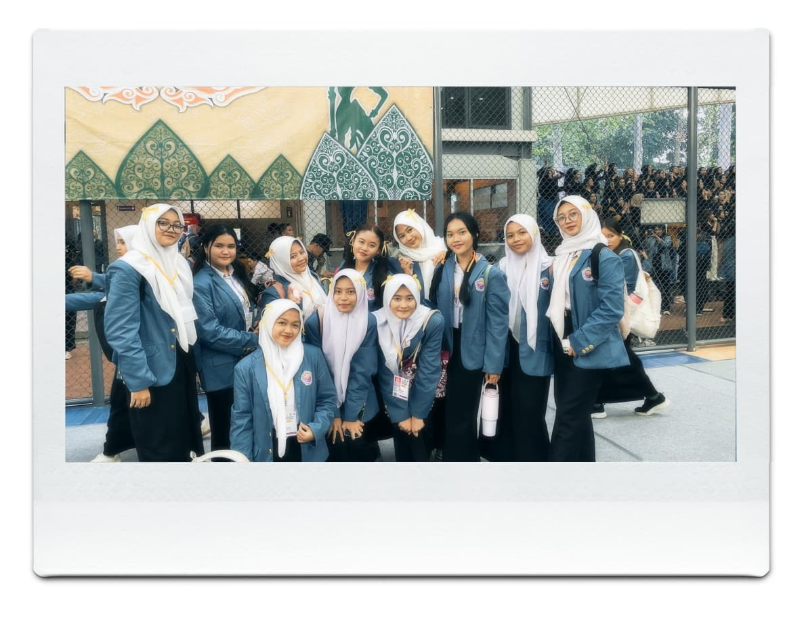

Pengalaman PKKMB

Pengalaman mengikuti PKKMB merupakan hal baru yang sangat berkesan bagi saya. Pada hari pertama, saya merasa gugup karena harus beradaptasi dengan lingkungan kampus yang berbeda dari sekolah sebelumnya. Saya juga masih belum mengenal banyak orang.
Seiring berjalannya waktu, saya mulai merasa lebih nyaman. Saya bertemu banyak teman baru dari berbagai daerah dan jurusan. Kami saling berkenalan dan berbagi cerita sehingga suasana menjadi lebih akrab.
Kegiatan yang dilakukan cukup beragam, mulai dari pengenalan kampus, materi tentang perkuliahan, hingga kegiatan kelompok yang melatih kerja sama. Walaupun terasa melelahkan, semua kegiatan tersebut memberikan banyak pengalaman baru.
Dari kegiatan PKKMB ini, saya mendapatkan banyak pengetahuan tentang dunia perkuliahan. Saya juga menjadi lebih percaya diri dan siap menjalani kehidupan sebagai mahasiswa.